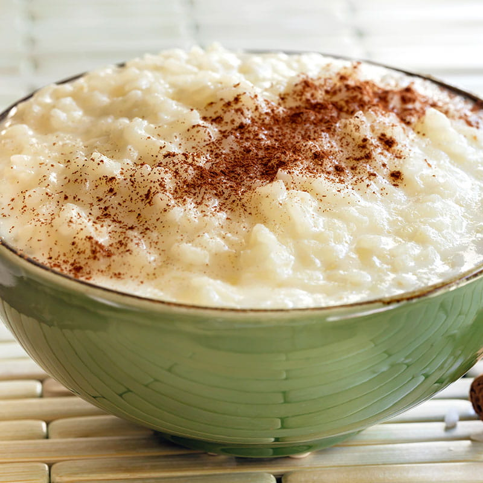

Arroz doce
Descrição
Doce das romarias e casamentos por todo o país, com ou sem gemas, mas sempre polvilhado com canela. Uma receita cremosa que sacia as memórias de qualquer um.
Ingredientes
- 1L de leite meio-gordo
- 200 g de açucar em pó
- 200 g de arroz carolino
- 1 colher(de café)de sal
- 1 casca de limão
- 3 gemas de ovo
- 1 q.b. de canela em pó
Modo de preparação
- Leve ao lume um tacho com o leite, o açúcar, o arroz e o sal e quando levantar fervura introduza a casca de limão.
- Deixe cozer em lume brando, mexendo de vez em quando, até o arroz estar bem cozido mas ainda caldoso.
- Desfaça as gemas com um garfo numa tigela,junte um pouco do arroz cozido,mexa e misture tudo no tacho
- Leve novamente ao luma, agora muito abaixo,e mexa cerca de um minuto.
- Retire do lume e distribua por taças individuais ou numa travessa funda.
- Depois de frio, polvilhe com canela.